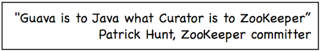

1. 前言
这篇文章简单给演示一下 ZooKeeper 常见命令的使用以及 ZooKeeper Java客户端 Curator 的基本使用。介绍到的内容都是最基本的操作，能满足日常工作的基本需要。
如果文章有任何需要改善和完善的地方，欢迎在评论区指出，共同进步！
2. ZooKeeper 安装和使用
2.1. 使用Docker 安装 zookeeper
a.使用 Docker 下载 ZooKeeper
docker pull zookeeper:3.5.8
b.运行 ZooKeeper
docker run -d --name zookeeper -p 2181:2181 zookeeper:3.5.8
2.2. 连接 ZooKeeper 服务
a.进入ZooKeeper容器中
先使用 docker ps 查看 ZooKeeper 的 ContainerID，然后使用 docker exec -it ContainerID /bin/bash 命令进入容器中。
b.先进入 bin 目录,然后通过 ./zkCli.sh -server 127.0.0.1:2181命令连接ZooKeeper 服务
root@eaf70fc620cb:/apache-zookeeper-3.5.8-bin# cd bin
如果你看到控制台成功打印出如下信息的话，说明你已经成功连接 ZooKeeper 服务。

2.3. 常用命令演示
2.3.1. 查看常用命令(help 命令)
通过 help 命令查看 ZooKeeper 常用命令
2.3.2. 创建节点(create 命令)
通过 create 命令在根目录创建了 node1 节点，与它关联的字符串是"node1"
[zk: 127.0.0.1:2181(CONNECTED) 34] create /node1 “node1”
通过 create 命令在根目录创建了 node1 节点，与它关联的内容是数字 123
[zk: 127.0.0.1:2181(CONNECTED) 1] create /node1/node1.1 123
Created /node1/node1.1
2.3.3. 更新节点数据内容(set 命令)
[zk: 127.0.0.1:2181(CONNECTED) 11] set /node1 "set node1"
2.3.4. 获取节点的数据(get 命令)
get 命令可以获取指定节点的数据内容和节点的状态,可以看出我们通过 set 命令已经将节点数据内容改为 "set node1"。
set node1
cZxid = 0x47
ctime = Sun Jan 20 10:22:59 CST 2019
mZxid = 0x4b
mtime = Sun Jan 20 10:41:10 CST 2019
pZxid = 0x4a
cversion = 1
dataVersion = 1
aclVersion = 0
ephemeralOwner = 0x0
dataLength = 9
numChildren = 1
2.3.5. 查看某个目录下的子节点(ls 命令)
通过 ls 命令查看根目录下的节点
[zk: 127.0.0.1:2181(CONNECTED) 37] ls /
[dubbo, ZooKeeper, node1]
通过 ls 命令查看 node1 目录下的节点
[zk: 127.0.0.1:2181(CONNECTED) 5] ls /node1
[node1.1]
ZooKeeper 中的 ls 命令和 linux 命令中的 ls 类似， 这个命令将列出绝对路径 path 下的所有子节点信息（列出 1 级，并不递归）
2.3.6. 查看节点状态(stat 命令)
通过 stat 命令查看节点状态
[zk: 127.0.0.1:2181(CONNECTED) 10] stat /node1
cZxid = 0x47
ctime = Sun Jan 20 10:22:59 CST 2019
mZxid = 0x47
mtime = Sun Jan 20 10:22:59 CST 2019
pZxid = 0x4a
cversion = 1
dataVersion = 0
aclVersion = 0
ephemeralOwner = 0x0
dataLength = 11
numChildren = 1
上面显示的一些信息比如 cversion、aclVersion、numChildren 等等，我在上面 “znode(数据节点)的结构” 这部分已经介绍到。
2.3.7. 查看节点信息和状态(ls2 命令)
ls2 命令更像是 ls 命令和 stat 命令的结合。 ls2 命令返回的信息包括 2 部分：
- 子节点列表
- 当前节点的 stat 信息。
[zk: 127.0.0.1:2181(CONNECTED) 7] ls2 /node1
[node1.1]
cZxid = 0x47
ctime = Sun Jan 20 10:22:59 CST 2019
mZxid = 0x47
mtime = Sun Jan 20 10:22:59 CST 2019
pZxid = 0x4a
cversion = 1
dataVersion = 0
aclVersion = 0
ephemeralOwner = 0x0
dataLength = 11
numChildren = 1
2.3.8. 删除节点(delete 命令)
这个命令很简单，但是需要注意的一点是如果你要删除某一个节点，那么这个节点必须无子节点才行。
[zk: 127.0.0.1:2181(CONNECTED) 3] delete /node1/node1.1
在后面我会介绍到 Java 客户端 API 的使用以及开源 ZooKeeper 客户端 ZkClient 和 Curator 的使用。
3. ZooKeeper Java客户端 Curator简单使用
Curator 是Netflix公司开源的一套 ZooKeeper Java客户端框架，相比于 Zookeeper 自带的客户端 zookeeper 来说，Curator 的封装更加完善，各种 API 都可以比较方便地使用。

下面我们就来简单地演示一下 Curator 的使用吧！
Curator4.0+版本对ZooKeeper 3.5.x支持比较好。开始之前，请先将下面的依赖添加进你的项目。
<dependency>
<groupId>org.apache.curator</groupId>
<artifactId>curator-framework</artifactId>
<version>4.2.0</version>
</dependency>
<dependency>
<groupId>org.apache.curator</groupId>
<artifactId>curator-recipes</artifactId>
<version>4.2.0</version>
</dependency>
3.1. 连接 ZooKeeper 客户端
通过 CuratorFrameworkFactory 创建 CuratorFramework 对象，然后再调用 CuratorFramework 对象的 start() 方法即可！
private static final int BASE_SLEEP_TIME = 1000;
private static final int MAX_RETRIES = 3;
// Retry strategy. Retry 3 times, and will increase the sleep time between retries.
RetryPolicy retryPolicy = new ExponentialBackoffRetry(BASE_SLEEP_TIME, MAX_RETRIES);
CuratorFramework zkClient = CuratorFrameworkFactory.builder()
// the server to connect to (can be a server list)
.connectString("127.0.0.1:2181")
.retryPolicy(retryPolicy)
.build();
zkClient.start();
对于一些基本参数的说明：
baseSleepTimeMs：重试之间等待的初始时间maxRetries：最大重试次数connectString：要连接的服务器列表retryPolicy：重试策略
3.2. 数据节点的增删改查
3.2.1. 创建节点
我们在 ZooKeeper常见概念解读 中介绍到，我们通常是将 znode 分为 4 大类：
- 持久（PERSISTENT）节点 ：一旦创建就一直存在即使 ZooKeeper 集群宕机，直到将其删除。
- 临时（EPHEMERAL）节点 ：临时节点的生命周期是与 客户端会话（session） 绑定的，会话消失则节点消失 。并且，临时节点 只能做叶子节点 ，不能创建子节点。
- 持久顺序（PERSISTENT_SEQUENTIAL）节点 ：除了具有持久（PERSISTENT）节点的特性之外， 子节点的名称还具有顺序性。比如
/node1/app0000000001、/node1/app0000000002。 - 临时顺序（EPHEMERAL_SEQUENTIAL）节点 ：除了具备临时（EPHEMERAL）节点的特性之外，子节点的名称还具有顺序性。
你在使用的ZooKeeper 的时候，会发现 CreateMode 类中实际有 7种 znode 类型 ，但是用的最多的还是上面介绍的 4 种。
a.创建持久化节点
你可以通过下面两种方式创建持久化的节点。
//注意:下面的代码会报错，下文说了具体原因
zkClient.create().forPath("/node1/00001");
zkClient.create().withMode(CreateMode.PERSISTENT).forPath("/node1/00002");
但是，你运行上面的代码会报错，这是因为的父节点node1还未创建。
你可以先创建父节点 node1 ，然后再执行上面的代码就不会报错了。
zkClient.create().forPath("/node1");
更推荐的方式是通过下面这行代码， creatingParentsIfNeeded() 可以保证父节点不存在的时候自动创建父节点，这是非常有用的。
zkClient.create().creatingParentsIfNeeded().withMode(CreateMode.PERSISTENT).forPath("/node1/00001");
b.创建临时节点
zkClient.create().creatingParentsIfNeeded().withMode(CreateMode.EPHEMERAL).forPath("/node1/00001");
c.创建节点并指定数据内容
zkClient.create().creatingParentsIfNeeded().withMode(CreateMode.EPHEMERAL).forPath("/node1/00001","java".getBytes());
zkClient.getData().forPath("/node1/00001");//获取节点的数据内容，获取到的是 byte数组
d.检测节点是否创建成功
zkClient.checkExists().forPath("/node1/00001");//不为null的话，说明节点创建成功
3.2.2. 删除节点
a.删除一个子节点
zkClient.delete().forPath("/node1/00001");
b.删除一个节点以及其下的所有子节点
zkClient.delete().deletingChildrenIfNeeded().forPath("/node1");
3.2.3. 获取/更新节点数据内容
zkClient.create().creatingParentsIfNeeded().withMode(CreateMode.EPHEMERAL).forPath("/node1/00001","java".getBytes());
zkClient.getData().forPath("/node1/00001");//获取节点的数据内容
zkClient.setData().forPath("/node1/00001","c++".getBytes());//更新节点数据内容
3.2.4. 获取某个节点的所有子节点路径
List<String> childrenPaths = zkClient.getChildren().forPath("/node1");